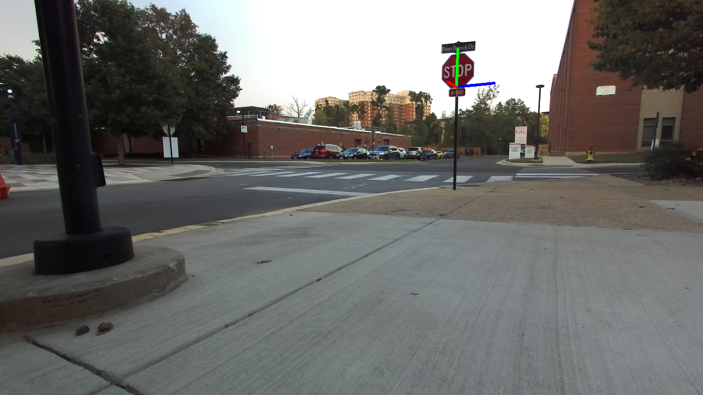
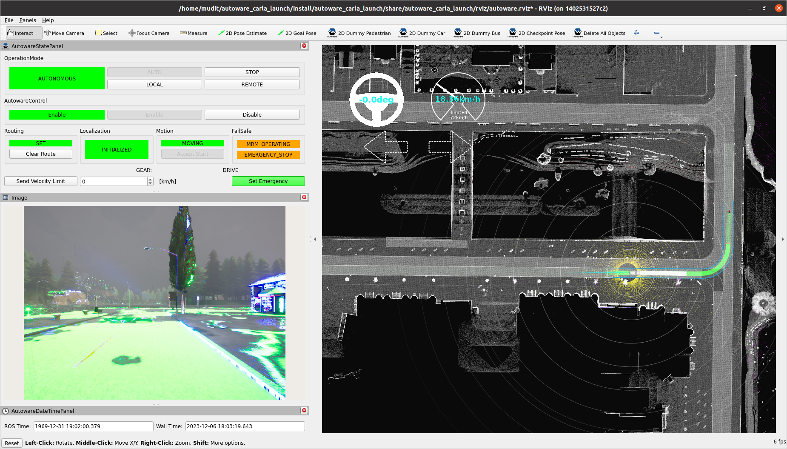
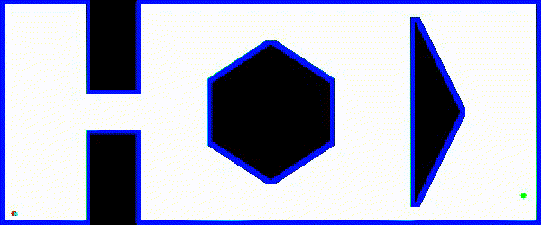

Robotics Engineer | Autonomous Vehicles | Mobile Robotics
Currently working on research on autonomous e-scooters at the University of Maryland, College Park to improve localization capabilities.
Additionally, I have a solid background in data engineering, demonstrated during my tenure at Tata Digital Ltd, where I optimized SQL queries and resolved high-priority production defects, significantly improving system performance and reliability. My proficiency in Agile methodologies and collaboration with cross-functional teams facilitated efficient problem-solving and project execution.
My diverse experiences across research, industry, and academic projects reflect a strong foundation in robotics, autonomous vehicles, software development, and data engineering. My proactive approach, coupled with technical proficiency and collaborative spirit, positions me as a valuable asset in software development teams, driving innovation and achieving impactful results.
- Languages: C/C++, Python, Embedded C, MATLAB, SQL
- Robotics Development: Localization, Perception, Path Planning, Simulation of AVs, Reinforcement Learning
- Software Libraries and Tools: OpenCV, YOLOv7, PyTorch, CARLA(Unreal Engine), Autoware Universe, TensorFlow, scikit-learn, ROS2, SLAM, SolidWorks, Fusion360
- Software Development: Git, Docker, CMake, Google Test, CodeCov, Jira
- Currently Learning: Localization, State Estimation, and DGPS
PROJECTS

Localization Using Stop Signs
Developed neural-network based localization algorithm that uses stop signs to estimate vehicle pose.

Pick and place using IK solver for KUKA Youbot
Implemented a IK solver for manipulator arm of KUKA Youbot and 4-wheel mechanum chassis kinematics for picking and placing of objects in different settings.

Autonomous Driving Using Autoware Universe and Carla Sim
Autonomous vehicle control done using Autoware Universe interfaced with Carla Simulator. Also checkout my open-source contribution to run Carla Sim with ROS2 bridge all in Nvidia GPU accelerated Docker container.

Self-balancing algorithm for quadrupedal robots
A low-latency self-balancing algorithm for quadrupedal robots (like Boston Dynamics' Spot) developed using C++, inverse kinematics, and trigonometry.

Reinforcement learning in custom Gym environment
Navigating a Turtlebot 3 in a custom continuous 2D environment using an implementation of TD3 RL algorithm

Robot Path Planning using A* algorithm
Implementation of A* path planning algorithm in a 2D representation of world with obstacles.

Vision based garbage-collection robot
C++ and ROS2 Humble-based package to collect color-coded garbage blocks using Turtlebot3, simulated on Gazebo.
ReZoom - Autonomous E-Scooter, University of Maryland | College Park, MD | Feb 2023 - Present
Research Assistant
- Designed and assembled 3rd version of the e-scooter using Fusion 360, 3D printing on UltiMaker S5, Nvidia Jetson Orin, Zed2i
stereo camera, Phiget IMU, Reach M+ GPS, ODrive BLDC motor controller, and optical encoders.
- Conceptualized and implemented a Homography-based algorithm to estimate e-scooter pose w.r.t. stop signs using YoloV7,
Python, ROS TF, OpenCV, and PyTorch, achieving a real-time frame rate of 15 Hz.
- Currently working on containerizing ROS modules using Docker with Nvidia CUDA acceleration and USB port forwarding.
RAAS Lab, University of Maryland | College Park, MD | Aug 2023 - Dec 2023
Independent Research
- Designed custom hardware accelerated (Nvidia GPU support) Docker images to run Carla Sim with ROS 2 bridge.
- Achieved fully autonomous vehicle control in 5 Carla Sim maps with mixed traffic (bicycles, sedans, SUVs, and Trucks) using
Autoware Universe on a Tesla Model 3, simulated in Carla Sim.
TRC Robotics | Remote | May 2023 - Aug 2023
Robotics Software Intern
- Designed modules in Embedded-C to generate CAN data frames for controlling the differential-drive robot in 5 different open
and closed-loop operating modes, achieving reliable communication at 2m wire length and data rate of 512 kbps.
- Achieved autonomous navigation in a 80x50 m2 simulated restaurant using ROS (Melodic) navigation stack and Gazebo.
Tata Digital Ltd. | Mumbai, India | Aug 2020 - Jun 2022
Data Engineer
- Optimized SQL queries and Postgres database for customer service module, reducing response time by 60% across 10 brands.
- Resolved 50+ high priority production defects using SQL, and JIRA, following Agile Methodologies and coordinating with
multiple stakeholders - product managers, Orchestration (API) team, QA team, and other Data Engineers.
ARDE, DRDO | Pune, India | May 2019 - Jul 20219
Research Intern
- Simulated a PID controller for a BLDC motor on Simulink and implemented it using embedded-C on a Sharc ADSP board.
- Improved accuracy of actuator position curve tracking by 15% by incorporating ‘fuzzy logic PID controller’ on Simulink.
{kind=link}
{kind=link}
{kind=link}